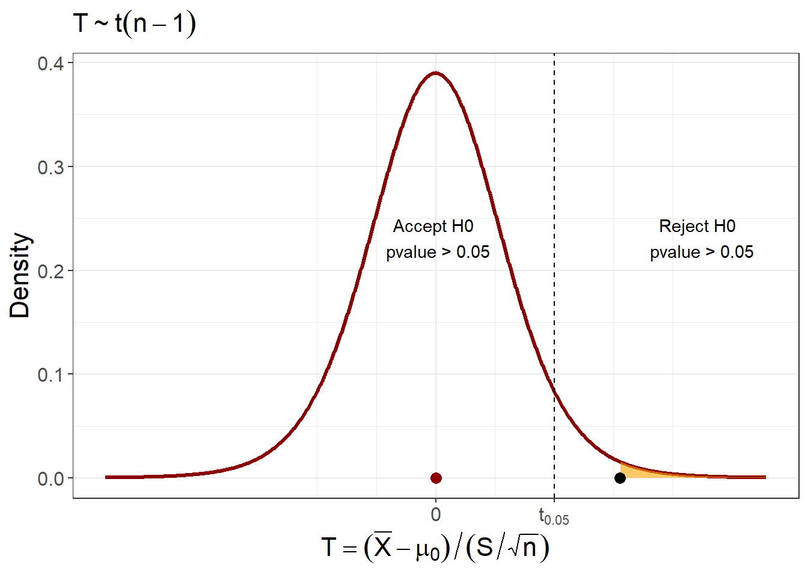
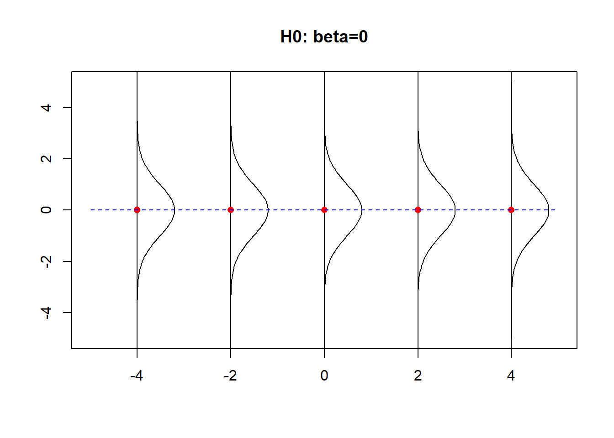
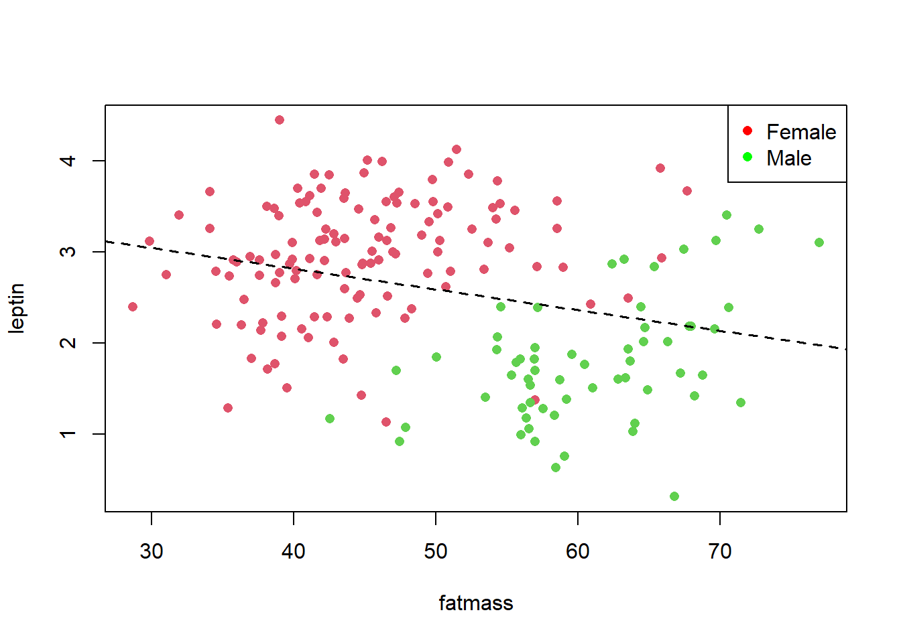
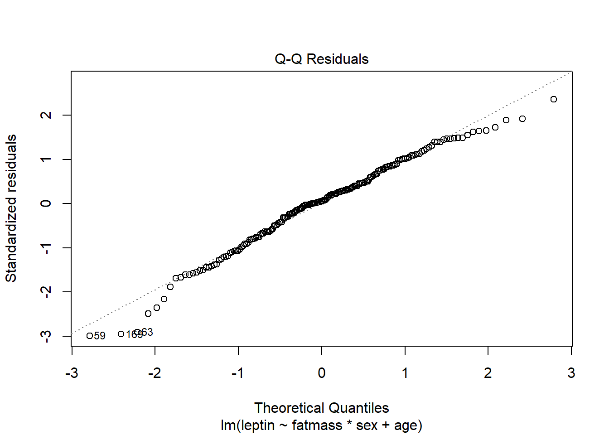
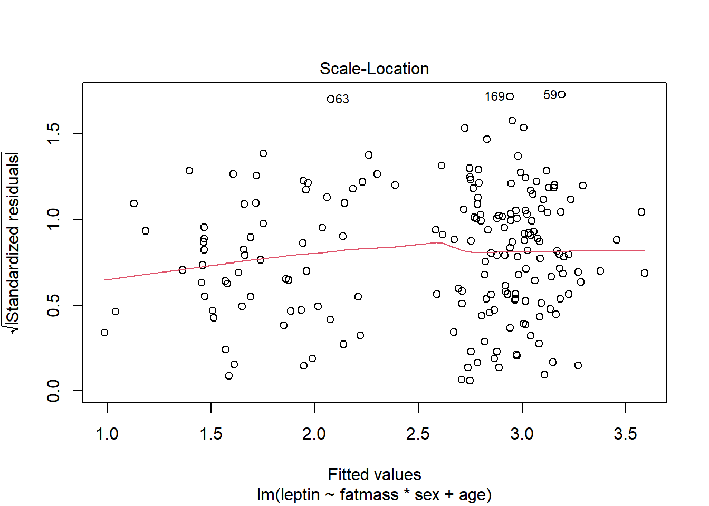
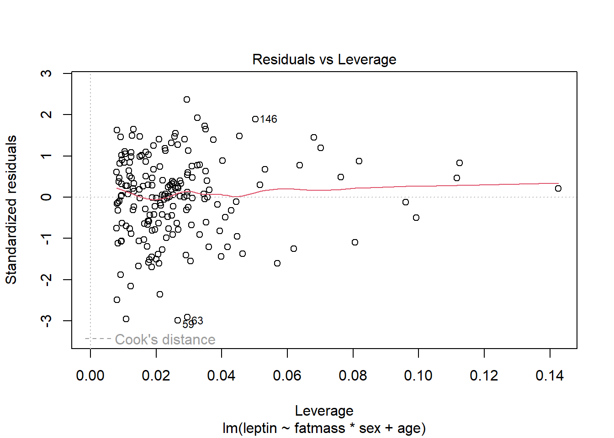

Chapter 18 Regression and correlation
18.1 Objective
In this chapter we will see how to test the statistical independence of two continuous random variables. We will introduce the correlation as a parameter of a 2 dimensional normal distribution. We will perform statistical test on the correlation.
We will also see how to test statistical independence when we consider one of the variables as an outcome (dependent) and another as a condition (independent). We will introduce regression analysis to test the linear dependence between the variables. Finally, we will talk bout multiple regression, when we want to adjust the associations by other variables.
18.2 Correlations
Leptin is a hormone produced by adipose tissue. We want to study the serum leptin levels in the adult population (PMID: 23628382, data available at GEO:GSE45987) under a continuous condition, such as the amount in kilograms of body fat. We assume that
- The levels of leptin in blood have a probability density
\[Y \rightarrow N(\mu_y, \sigma_y^2)\]
- The levels of fat mass have a probability density
\[X \rightarrow N(\mu_x, \sigma_x^2)\]
18.3 Data
One random experiment in our study has two outcomes: \((leptin, fatmass)\).
Continuous variable (outcome of interest)
- \(lepting \in (0, 5)\)
Continuous variable (explanatory variable)
- \(fatmass \in (20,80)\)
Repeating the experiment \(n\) times, the data for the first five repetitions look like
## leptin fatmass
## 1 3.355677 45.721
## 2 2.272126 43.895
## 3 1.071584 47.871
## 4 3.921082 65.801
## 5 1.536867 56.644
## 6 1.177115 56.355In this study we are interested in finding out whether individuals with higher fat mass will have higher circulating levels of leptin. In statistical terms we are asking whether fat mass and leptin are statistically independent. How can we test this?
We need to formulate a hypothesis test on a parameter of a distribution.
18.4 Normal bivariate
Let’s consider that one random experiment of the study consists on drawing a pair of measurements of both leptin levels and a fat mass of an individual. We therefore have a random variable that its a pair of measurements that follows a probability distribution. We will assume that the distribution is the 2 dimensional version of a normal probability density
\[(Y, X) \rightarrow N(\mu_y, \sigma^2_y, \mu_x, \sigma^2_x, \rho)\]
This is function has five parameters. More explicitly the function is of the form
\[f(y,x)=\frac{1}{2\pi \sigma_y\sigma_x \sqrt{1-\rho^2}}e^{\frac{(y-\mu_y)^2}{\sigma_y^2}-\frac{2\rho(y-\mu_y)(x-\mu_x)}{\sigma_y\sigma_x}+\frac{(x-\mu_x)^2}{\sigma_x^2}}\]
and the parameters are \(\mu_y, \mu_x, \sigma^2_y, \sigma_x^2, \rho\). These are
The marginal mean and variance of \(Y\)
- \(\mu_y=E(Y)\), \(\sigma^2_y=V(Y)\)
The marginal mean and variance of \(X\)
- \(\mu_x=E(X)\), \(\sigma^2_x=V(X)\)
The correlation between \(X\) and \(Y\)
- \(\rho=\frac{E[(Y-\mu_y)(X-\mu_x)]}{\sigma_y\sigma_x}\)
\(\rho\) is called the correlation coefficient.
When we draw the probability density in two dimensions, we see that the marginal densities, these are the projections of the densities on each axis, define the densities
\[X \rightarrow N(\mu_x, \sigma_x^2)\]
and
\[Y \rightarrow N(\mu_y, \sigma_y^2)\]
with its parameters. We can plot the 2D density as contour lines and the marginal densities on each axis

We can also plot the density in a 3D plot, where the \(Z\) axis is the value of the probability density.

If we keep the contour plots of the 2D distribution, we see that the fifth parameter \(\rho\) defines the direction on which the ellipses are elongated (mayor axis).

The density is threfore determined with 5 parameters.
18.5 Estimators
We can derive the estimator of all 5 parameters, if we formulate the likelihood function
\[L=\Pi_{i=1}^n f(y_i,x_i; \mu_x, \mu_y, \sigma^2_x, \sigma_y^2, \rho)\] and maximize it for each parameter. As a result, we obtain the following estimators of the parameters.
The estimators for the means are the usual averages
- \(\bar{Y}=\frac{1}{n}\sum_{i=1}^n y_i\) estimates \(\mu_y\)
- \(\bar{X}=\frac{1}{n}\sum_{i=1}^n x_i\) estimates \(\mu_x\)
The estimators for the variances are
- \(S^2_y=\frac{1}{n}\sum_{i=1}^n (y_i-\bar{y})^2\) estimates \(\sigma^2_y\)
- \(S^2_x=\frac{1}{n}\sum_{i=1}^n (x_i-\bar{x})^2\) estimates \(\sigma^2_x\)
The estimator for the correlation
- \(R=\frac{\sum_{i=0}^n(X_i-\bar{X})(Y_i-\bar{Y})}{\sqrt{\sum_{i=1}^n(X_i-\bar{X})^2}\sqrt{\sum_{i=1}^n(Y_i-\bar{Y})^2}}\) estimates \(\rho\).
18.6 Correlation coefficient
\(R\) is then a statistics that can be computed from the data and we can take one value as an estimate of \(\rho\). The sampling distribution of \(R\) can be obtained if we transform it into a new variable (Fisher’s z transformation)
\[Z=\frac{1}{2}\ln (\frac{1+R}{1-R})\] The new variable \(Z\) is a normal variable
\[Z \rightarrow_{aprox} N(\frac{1}{2}\ln (\frac{1+\rho}{1-\rho}), \frac{1}{n-3})\]
with mean \(\frac{1}{2}\ln (\frac{1+\rho}{1-\rho})\) and variance \(\frac{1}{n-3}\).
As \(R\) estimates \(\rho\) we have that
If \(R\) is near \(0\) then there is no linear relationship between \(y\) and \(x\) (the mayor and minor axes of the 2D plot are the x and y axes).
If \(R\) is near \(1\) there is strong evidence of a linear relationship between \(y\) and \(x\) (the mayor axis does not align with neither the x or the y axis).
\(R\) is then a measure of the statistical dependence between \(Y\) and \(X\). We can use it to test that hypothesis.
18.7 Hypothesis contrast
The hypothesis contrast for the independence on the relationship between \(Y\) and \(X\) can be formulated as
\(H_0: \rho=0\) (null hypothesis). Therefre, \(Y\) and \(X\) are consider statistically independent and consequently \(f(y,x)=f(x)f(y)\)
\(H_1: \rho \neq 0\) (alternative hypothesis). Therefore, \(Y\) and \(X\) are statistically dependent.
We then use the statistic \(R\) to test whether there is a dependency between \(y\) and \(x\). For testing the hypothesis contrast , we take the observed value of \(R\)
\[r_{obs}=\hat{\rho}=\frac{\sum_{i=0}^n(x_i-\bar{x})(y_i-\bar{y})}{\sqrt{\sum_{i=1}^n(x_i-\bar{x})^2}\sqrt{\sum_{i=1}^n(y_i-\bar{y})^2}}\]
and compute its \(pvalue\). That is the probability that we obtain a larger value if we repeat the sample when the null hypothesis is true. Under the null hypothesis \(\rho=0\), we then we compute the two-tailed \(pvalue\)
\[pvalue=2(1- F(|r_{obs}|)= 2(1- F_{normal}(|z_{obs}|) \]
where
\[Z \rightarrow_{aprox} N(0, \frac{1}{n-3})\]
Example (leptin and fat mass)
import pandas as pd
from scipy.stats import pearsonr
data = pd.read_csv('https://alejandro-isglobal.github.io/SDA/data/leptinFatmass.txt',
sep=' ')
leptin = data['leptin']
fatmass = data['fatmass']
pearsonr(leptin, fatmass)PearsonRResult(statistic=-0.27664924595293827, pvalue=0.00012143760304939414)For our data we have that the observed correlation coefficient is \(r_{obs}=-0.2766492\) and its transformed value
\[z_{obs}=ln((1-0.2766492)/(1+0.2766492))/2=-0.2840499\]
The \(pvalue\) is therefore
\[pvalue=2(1- F_{N(0,1/185)}(0.2840499))=0.0001\]
Therefore, since it is lower than \(\alpha=0.05\), we reject the null hypothesis that leptin and fat mass are independent. Note that leptin and fat mass are weakly correlated because \(r=-0.28\) but the correlation is highly significant because \(pvalue=0.0001\).
We should take this result with caution:
Looking at the data we see that the fitted 2D probability function and we see that the marginal histograms are not quite normally distributed.
From literature we know that as we increase fat mass we should obtain more leptin, not the contrary, as it is released from adipose tissue.

So how can we improve our analysis, so that our results are as expected?
18.8 Regression analysis
To determine if \(leptin\) and \(fatmass\) are statistically independent, we can rather ask: What is the probability density of leptin at a given value of fat mass. Remember, two variables \(Y\) and \(X\) are independent if
\[P(Y|X)=P(Y)\]
Therefore, we first calculate the conditional probability density of \(Y\) (leptin) given \(X\) (fat mass) from the definition
\[f(y|x)=\frac{f(y,x)}{f(y)} =N(\mu_{y|x}, \sigma^2_{y|x})\]
This turns up to be a normal distribution. The conditional probability is the profile, or a slice, of the 2D distribution at a given value of \(x\).

The mean of the conditional distribution is (the red dot)
\[\mu_{y|x}=\mu_y+\frac{\sigma_y\rho}{\sigma_x}(x-\mu_x)\]
If we manipulate this equation, we see that the conditional mean is a linear function of \(x\)
\[\mu_{y|x}=(\mu_y-\mu_x \frac{\sigma_y\rho}{\sigma_x})+\frac{\sigma_y \rho}{\sigma_x} x=\alpha + \beta x\]
where \(\alpha=\mu_y-\mu_x \beta\) and \(\beta=\frac{\sigma_y \rho}{\sigma_x}\). This line is called a regression line (red dotted line in the plot). That is, when we move along the \(X\) axis, the conditional mean of \(Y\) moves linearly.
The variance of the conditional density is
\[\sigma^2_{y|x}= \sigma_y^2(1-\rho^2)\] Solving for \(\rho^2\), we have
\[\rho^2=\frac{\sigma_y^2-\sigma^2_{y|x}}{\sigma_y^2} \] \(\rho^2\) is the proportion of the total variance that is explained by the regression line. For instance, \(\rho^2=1\) when there is no variability \(\sigma^2_{y|x}\); that is, all the observations fall on the regression line.
18.9 Linear model
Consider the linear model for the values of \(Y\) conditioned to the value of \(x_i\)
\[Y_{x_i} = \alpha + \beta x_i +E_{i}\]
with Random error:
\(E_{i}\) is a random variable with expected value \(E(E_{i})=0\) and variance \(V(E_{i})=\sigma_{y|x}^2\)
\(i\) is the index of the observation: \(1...n\) (typically one for every \(x_i\) as \(x_i\) is continuous)
and the expected value of \(Y_{x_i}\) is the regression line
\[\mu_{y|x_i}=\alpha + \beta x_i\] with
\[\alpha=\mu_y-\beta\mu_x\] and
\[\beta=\rho\frac{\sigma_y}{\sigma_x}\]
18.10 Hypothesis contrast
Null hypothesis:
- \(H_0: \beta=0\). \(Y\) and \(X\) are statistically independent, and therefore \(f(y|x)=f(y)\). If this is the case then the regression line is flat and we have the following model

Note that all marginal probability (projection of the probability on the \(y\) axis) would be identical to all the conditional probabilities.
Alternative hypothesis:
- \(H_1: \beta\neq 0\). \(Y\) and \(X\) are statistically dependent. If this is the case then we have the following model
Note that all marginal probability would be the combination of the conditional probabilities.

18.11 Estimators
\(\beta\) is therefore our parameter of interest and we need a probability distribution to test its hypothesis contrast
- \(\beta=\rho\frac{\sigma_y}{\sigma_x}\) suggest the estimator for \(\beta\)
\[B=\frac{\sum_{i=1}^m(x_i-\bar{x})(Y_i-\bar{Y})}{\sum_{i=1}^n(x_i-\bar{x})^2}\]
- \(\alpha=\mu_y-\beta\mu_x\) suggests the estimator for \(\alpha\)
\[A=\bar{Y}- \hat{\beta}\bar{x}\]
The estimators \(A\) and \(B\) for \(\alpha\) and \(\beta\) can formally be derived from minimizing the sum of squares for the error given \(x_i\)
\[SSE=\sum_{i=1}^n(Y_i-\bar{Y_i})^2=\sum_{i=1}^n(Y_i-\alpha + \beta x_i)^2\] with respect to \(\alpha\) and \(\beta\). If \(\bar{Y_i}\) is normal then
\[B \rightarrow N(\beta, \frac{n\sigma^2_y}{{(n-2)s^2_x}})\]
with mean \(E(B)=\beta\) and, therefore, it is an unbiased estimator.
18.12 Hypothesis testing
Under the null hypothesis, \(\beta=0\) and the standardized error from the null hypothesis are
\[\frac{\hat{\beta}}{\sqrt{\frac{ns^2_y}{{(n-2)s^2_x}}}} \rightarrow T(n-2)\] follows a t-distribution with \(n-2\) degrees of freedom.
Example (leptin and fatmass)
We can perform the statistical test
import pandas as pd
from scipy.stats import pearsonr
data = pd.read_csv('https://alejandro-isglobal.github.io/SDA/data/leptinFatmass.txt',
sep='\t')
model = ols('leptin ~ fatmass', data=data).fit()
print(model.summary()) OLS Regression Results
==============================================================================
Dep. Variable: leptin R-squared: 0.077
Model: OLS Adj. R-squared: 0.072
Method: Least Squares F-statistic: 15.42
Date: Mon, 04 Sep 2023 Prob (F-statistic): 0.000121
Time: 09:33:40 Log-Likelihood: -231.59
No. Observations: 188 AIC: 467.2
Df Residuals: 186 BIC: 473.7
Df Model: 1
Covariance Type: nonrobust
==============================================================================
coef std err t P>|t| [0.025 0.975]
------------------------------------------------------------------------------
Intercept 3.7201 0.295 12.604 0.000 3.138 4.302
fatmass -0.0226 0.006 -3.926 0.000 -0.034 -0.011
==============================================================================
Omnibus: 10.660 Durbin-Watson: 1.753
Prob(Omnibus): 0.005 Jarque-Bera (JB): 4.983
Skew: -0.141 Prob(JB): 0.0828
Kurtosis: 2.254 Cond. No. 249.
==============================================================================
where the observed value of \(B\) is
\[\beta_{obs}= \frac{\sum_{i=1}^m(x_i-\bar{x})(y_i-\bar{y})}{\sum_{i=1}^n(x_i-\bar{x})^2}= -0.02262\] and
\[\alpha_{obs}=\bar{y}-\beta_{obs}\bar{x}= 3.72012\] and only \(7\%\) of the variability is explained by the regression line
\[R^2=0.07653\]
We can draw the regression line

We can see that the regression line is negative and there is quite a bit of dispersion about it. Remember that The correct way to interpret the line is to think that these are the values of \(Y\) conditioned on \(X\).
18.13 Stratified analysis
We can include other conditions in the regression, such as sex or age. In general it is important to adjust for other factors that we believe are correlated with the outcome \(Y\) and the condition \(x\), as they may explain part of the association.
Our study then includes the outcome \(Y\) with multiple regressors, or explanatory variables. For instance, the first observations of the complete dataset look like
## leptin fatmass sex age
## 1 3.355677 45.721 F 45
## 2 2.272126 43.895 F 77
## 3 1.071584 47.871 M 79
## 4 3.921082 65.801 F 58
## 5 1.536867 56.644 M 42
## 6 1.177115 56.355 M 75Consider the previous regression and color the points according to their sex

We clearly see that the negative association between leptin and fat mass is given by the effect of sex. As males have lower leptin levels and higher fat mass then the negative correlation between leptin and fatma mass is due to sex.
If we run regression separating, or stratifying, by sex we find a positive association between leptin and fat mass, as it is expected from the litterature.

18.14 Multiple Regression
The linear regression can be extended to include several number of factors. Consider the linear model with one additional factor
\[Y_{jr} = \alpha + \beta x_j +\gamma z_{r}+E_{jr}\]
Here, our effect of interest is the coefficient \(\beta\) of \(x_i\) (leptin) and we want to adjust for the effect of \(z_j\) (sex). The mode is similar to the linear model we used for ANOVA, only that now the treatment effects are continous and depend on the variable \(X\).
When we include both sex and age as additional factors in the regression, we observe that there is a positive increase in leptin when we correct for sex. Males have a negative assotiation with leptin, compared with women, and age has an almost significant association with leptin. Now, everything fits.
import pandas as pd
from scipy.stats import pearsonr
data = pd.read_csv('https://alejandro-isglobal.github.io/SDA/data/leptinFatmass.txt',
sep='\t')
model = ols('leptin ~ fatmass + sex + age', data=data).fit()
print(model.summary()) OLS Regression Results
==============================================================================
Dep. Variable: leptin R-squared: 0.491
Model: OLS Adj. R-squared: 0.482
Method: Least Squares F-statistic: 59.09
Date: Mon, 04 Sep 2023 Prob (F-statistic): 8.47e-27
Time: 09:40:31 Log-Likelihood: -175.66
No. Observations: 188 AIC: 359.3
Df Residuals: 184 BIC: 372.3
Df Model: 3
Covariance Type: nonrobust
==============================================================================
coef std err t P>|t| [0.025 0.975]
------------------------------------------------------------------------------
Intercept 1.4826 0.304 4.870 0.000 0.882 2.083
sex[T.M] -1.6120 0.136 -11.864 0.000 -1.880 -1.344
fatmass 0.0276 0.006 4.596 0.000 0.016 0.039
age 0.0054 0.003 1.811 0.072 -0.000 0.011
==============================================================================
Omnibus: 4.457 Durbin-Watson: 1.685
Prob(Omnibus): 0.108 Jarque-Bera (JB): 4.067
Skew: -0.345 Prob(JB): 0.131
Kurtosis: 3.207 Cond. No. 475.
==============================================================================18.15 Multiple Regression interaction
We can furthermore include interactions between conditions in the regression.
Consider the linear model
\[Y_{jr} = \alpha + \beta x_{j} +\gamma z_{r} + \delta (xz)_{jr} +E_{jr}\] The parameter \(\delta\) will add a contribution to the slope \(\beta\) that is specific to the condition \(r\). For instance, if \(z_i \in (0,1)\) then when \(z=0\) the coefficient of \(x_i\) is \(\beta\). But when \(z=1\) the coefficient of \(x_i\) is \(\beta+\gamma\).
In our example, if \(z\) is sex, then \(\gamma\) will test the differences in \(\beta\)s between males and females. We can furhter adjust by age.
\[Y_{jrs} = \alpha + \beta\times fatmass_{j} +\gamma\times sex_{r} + \delta\times (fatmass\times sex)_{jr} + \epsilon_s age+E_{jrs}\]
import pandas as pd
from scipy.stats import pearsonr
data = pd.read_csv('https://alejandro-isglobal.github.io/SDA/data/leptinFatmass.txt',
sep='\t')
model = ols('leptin ~ fatmass*sex + age', data=data).fit()
print(model.summary())
OLS Regression Results
==============================================================================
Dep. Variable: leptin R-squared: 0.503
Model: OLS Adj. R-squared: 0.492
Method: Least Squares F-statistic: 46.25
Date: Mon, 04 Sep 2023 Prob (F-statistic): 8.19e-27
Time: 09:43:38 Log-Likelihood: -173.41
No. Observations: 188 AIC: 356.8
Df Residuals: 183 BIC: 373.0
Df Model: 4
Covariance Type: nonrobust
====================================================================================
coef std err t P>|t| [0.025 0.975]
------------------------------------------------------------------------------------
Intercept 1.8001 0.337 5.337 0.000 1.135 2.466
sex[T.M] -3.2180 0.775 -4.151 0.000 -4.748 -1.688
fatmass 0.0200 0.007 2.881 0.004 0.006 0.034
fatmass:sex[T.M] 0.0284 0.014 2.104 0.037 0.002 0.055
age 0.0058 0.003 1.989 0.048 4.81e-05 0.012
==============================================================================
Omnibus: 7.164 Durbin-Watson: 1.699
Prob(Omnibus): 0.028 Jarque-Bera (JB): 6.943
Skew: -0.459 Prob(JB): 0.0311
Kurtosis: 3.209 Cond. No. 1.27e+03
==============================================================================Our data suggest a steeper increase of leptin with body fat in males than in females (interaction: \(0.028427\), \(pvalue=0.03\)), as we saw in the figures of the stratified analysis. The model now explains \(50\%\) of the variance \(R^2=0.5\)
18.16 Model diagnostics
All linear models have been made on the supposition that
Errors are distributed normally
Errors have the same variance
There are a number of plots to check that at least the data is consistent with these suppositions. In particular, we are interested to see that the residuals distribute symmetrically against the fitted values, revealing equal variance (homoscedasticity). We also want to check that the points in a quantile-quantile (QQ) plot fall in the line, revealing how close the rediduals distribute normally.




18.17 Questions
1) We perform a regression analysis when we have
\(\qquad\)a: one categorical variable; \(\qquad\)b: two categorical variables; \(\qquad\)c: one continuous random variable; \(\qquad\)d: two continuous random variables;
2) The correlation coefficient \(\rho\) is
\(\qquad\)a: a parameter of a 2D probability density; \(\qquad\)b: a statistic of the relationship between two continuous variables; \(\qquad\)c: the linear coefficient btween of two variables; \(\qquad\)d: the variance explained by one continuous variable on other;
3) \(\beta\) in the linear model
\[Y_{x_i} = \alpha + \beta x_i +E_{i}\]
\(\qquad\)a: is a statistic that measure the linear relationship between \(x\) and \(y\); \(\qquad\)b: is zero for the null hypothesis; \(\qquad\)c: is a parameter with expected value of zero; \(\qquad\)d: is the correlation between \(x\) and \(y\);
4) Why do we adjust for a variable in a regression coefficient?
\(\qquad\)a: to test the interaction between the variable and \(x\); \(\qquad\)b: to stratify the relationship between \(x\) and \(y\); \(\qquad\)c: to remove confounding in the relationship between \(x\) and \(y\); \(\qquad\)d: to improve the significance of the relationship between \(x\) and \(y\);
5) The regression analysis assumes that
\(\qquad\)a: the errors have mean 0 and equal variances; \(\qquad\)b: the errors distribute normally with mean 0 and equal variances; \(\qquad\)c: the errors distribute normally with different mean and equal variances; \(\qquad\)d: the errors distribute normally with different mean and different variances;
18.18 Practice
18.18.0.1 Practice
Load misophonia data https://alejandro-isglobal.github.io/SDA/data/data_0.txt
We have four measures of anxiety:
- Trait: ansiedad.rasgo (are you an anxious person?) continuous:0-100
- State: ansiedad.estado (are you currently feeling anxious?) continuous:0-100
- Diagnosed: ansiedad.medicada (have you been diagnosed with an anxiety disorder?) binary (si, no)
- Excess: ansiedad.dif (difference between State and Trait)
We formulate the following hypothesis:
Participants who enrolled in the study had an increased level of anxiety from their baseline (trait) that is related to their:
- age
- sex
- anxiety state.
We are interested in the variable anxiety.dif, that is the observed excess of anxiety from the trait
\(excess = state - trait\)
Answer the following questions:
Are the state and trait of anxiety correlated?
Is excess in anxiety higher in older people?
Is excess in anxiety higher in older people after adjusting by sex?
Is the interaction between age and sex significant on excess anxiety?